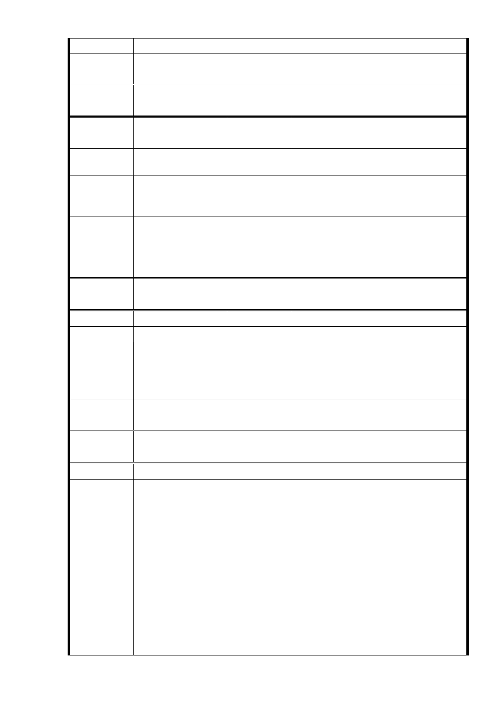

意見
專案小組
審查結論
同編號 1。
委
決
員
會
議
同編號 1。
編號
68
陳情人
洪敏中（台北市信義安全與健康
協進會公共場域委員會召集人）
陳情理由
1.
2.
安全措施不足，大客車停放空間不足。
避免現有居民與新住民衝突。
1. 整區地下規劃為地下大客車轉運站兼核災避難區（？名稱請
建 議 辦 法 釐清）及防災空間（加上消防車停放空間）。
2. 建議民政局一開始即規劃「信義計劃里」。
市 府 回 應 1.設置大客車停車位部分，同編號28回復內容。
意見
專案小組
審查結論
同編號 1。
委
決
員
會
議
同編號 1。
編號
69
陳情人 陳○霞
陳 情 理 由 廣慈博愛園區是個斷層、地層不穩危險地段
建議辦法
以老人活動中心和公園為主（不要分三塊開發）。
一定要環評。
市 府 回 應 1.有關斷層疑慮部分，同編號2回復內容。
意見
專案小組
審查結論
同編號 1。
委
決
員
會
議
同編號 1。
編號
70
陳情人 柏○開發股份有限公司
主旨：請貴會立即停止辦理「修訂『變更臺北市信義區福德段二
小段 319 地號等 11 筆土地（廣慈博愛院及福德平宅）機
關用地、道路用地為社會福利設施用地、公園用地、商業
區及道路用地主要計畫』 開發弦度規定案」及「修訂『
擬定臺北市信義區福德段二小段 319 地號等 11 筆土地社
會福利設施用地、公園用地、商業區及道路用地細部計畫
陳情理由
』土地使用分區管制規定案」審議及核定程序，以避免侵
害本公司合法權益及日後無謂紛爭。
說明：
一、覆貴會 103 年 3 月 26 日北市畫會一字第 10330207500 號
函。
二、本公司與臺北市政府於民國 98 年 6 月 15 日簽訂「民間參
與廣慈博愛園區興建及營運契約」（下稱廣慈博愛園區
- 87 -